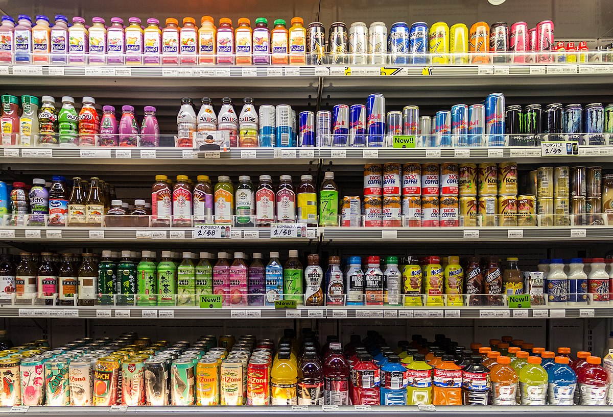
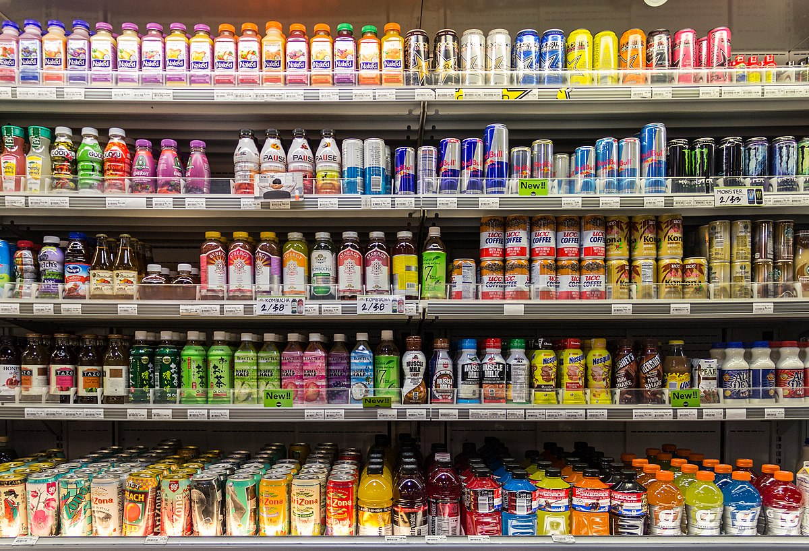

Белки являются основой строения каждого органа, каждой клетки. При белковом истощении снижаются) белковые резервы организма, происходит сдвиг водного обмена, нарушаются все обменные процессы и правильное функционирование органов. Особенно испытывает дефицит белка детский организм. У ребенка в этом случае может быть задержка роста, а в тяжелых случаях - его полное прекращение. Ослабленный белковым дефицитом, организм ребенка не сопротивляется различным болезням, особенно инфекционным. Жиры являются одним из поставщиков энергии, входят в состав клеток организма, участвуют в обменных процессах, повышают защитную способность организма, участвуют в процессах терморегуляции организма. Еще одна роль жира - механическая защита жизненно важных органов от ударов и смещения. Углеводы - основной источник энергии (обеспечивают 50-60% энергоценности пищевого рациона), образующегося
Углеводам отведена значительная роль в физиологической деятельности различных систем организма. Минеральные вещества являются составной частью всех жидкостей и тканей организма и принимают активное участие в пластических процессах. Они нужны для «строительства» всех тканей организма, особенно костей и зубов, для регуляции обменных процессов организма. Например, кальций укрепляет кости и зубы, способствует нормальному функционированию нервной и мышечной систем. Витамины - очень важные для жизни соединения, которые попадают в организм с пищей. Витамин А важен для роста организма, полезен для зрения. Витамины комплекса В способствуют функционированию нервной системы, участвуют в обмене углеводов, белков и жиров, обеспечивающих процессы клеточного дыхания, улучшают состояние кожи и укрепляют волосы. Витамин С укрепляет иммунную защиту организма, предотвращает мышечной слабости, защищает организм от неблагоприятных
Недостаток витаминов вызывает задержания развития, нарушения работы важных органов, обмена веществ и прочее. Основными продуктами питания для «строительства» здорового организма являются фрукты и овощи, хлеб и крупы, молочные и мясные продукты. Свежие овощи, фрукты, ягоды полезны, чем вареные, тушеные, консервированные. Важное гигиеническое требование - правильно организованный режим питания. Это означает, что необходимо строго придерживаться времени приема пищи и промежутков между ними. Крайне важно употреблять пищу в одно и то же время. К этому моменту организм «настраивается» на еды. Интервалы между приемами пищи не должны превышать четыре часа. Наиболее правильное четырехкратное еды: завтрак, второй завтрак, обед, ужин. Пищевые отравления возникают в результате употребления в пищу некачественных продуктов, ядовитых грибов и растений.
 
